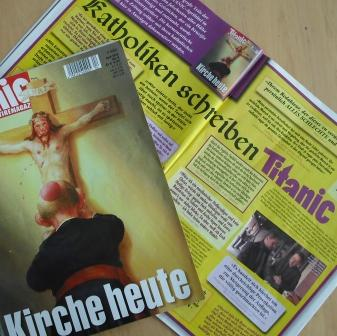
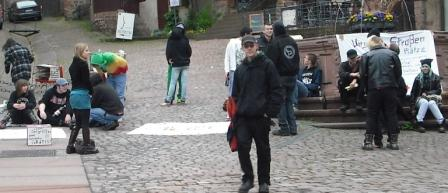

Wer hier noch stöbern möchte, kann das am besten im Archiv tun.
Zahlreiche andere interessante lokale Websites findet ihr nach wie vor in der Sidebar.
Die Hauptgründe dafür sind privater und persöhnlicher Natur und deswegen hier kein Thema.
Diskutiert werden darf natürlich der Sinn und Zweck eines solchen Blogs im Allgemeinen, kritischer Kritik und liebevollen Beschimpfungen sind wir auch nicht abgeneigt.
Die Kommentare werden noch eine Weile moderiert.
Zugegangen ist uns eine Einladung des Erwerbslosentreffpunkts in Obernburg zum nächsten Konzert von Rüdiger Horn (Songs, Folk):
Das Café fifty moechte den Sommer mit Liedern locken und laedt ein zu einem Benefizkonzert von Rüdiger Horn .
Zeit: Freitag 04.06.2010 ab 18:00 Uhr
Ort : Cafe fifty
Römerstrasse 41, Obernburg
Vielleicht waren Sie schon bei einem der beiden Benefiz-Konzerte von Rüdiger Horn in 2009 bei uns und haben eine gute Zeit gehabt? Wenn nicht, so ist jetzt gute Gelegenheit unser swingendes Café fifty kennen zu lernen.
Wenn Sie selber an diesem Abend nicht koennen, sagen Sie es weiter, schicken Sie die Einladung weiter, vielleicht haben Sie noch ein freies Plaetzchen fuer unseren Poster, machen Sie Werbung fuer uns, alleine damit schon helfen Sie uns!
- der Eintritt ist frei
- ab 18:00 bieten wir Getränke, Salate, Würstchen vom Grill zu sozialen Preisen
- wenn uns das Wettern nicht hold ist, so sind wir mit Zelt und Pavillons vorbereitet
- ALLE EINNAHMEN KOMMEN DEM CAFE FIFTY ZUGUTE!
Vielleicht gibt Ihnen die Hörprobe aus Rüdiger Horns umfangreichem Repertoire (WMV) den entscheidenden Anstoss.
Wir freuen uns auf Sie
Ihr Team vom Café fifty
Da sag mal einer, Internetrecherche würde nichts bringen. Bereits ein nur kurzer Blick in die Seiten des MAO-Projektes (Materialien zur Analyse von Opposition) brachte es an den Tag: Da gibt es eine Auflistung von interessanten Ereignissen aus den frühen Jahren der linken Bewegung in unserer Region. Eine kurze Email am gestrigen Abend führte sogleich zur Erlaubnis des Nachdrucks auf kommunal.tk und zum Versprechen von Jürgen Schröder, auch die wenigen vorhandenen Daten aus dem Kreis Miltenberg alsbald online zu stellen.
Für die Älteren unter uns mögen wehmütige oder auch wütende Erinnerungen mit den bei MAO publizierten Daten verbunden sein. Die Jüngeren mögen die Vielfalt der Gruppen, die Aktionen, aber auch den Dogmatismus und die Spaltungen bewundern oder auch belächeln. In jedem Fall sind diese Ereignisse Teil unserer Geschichte:
Zu den frühen Jahren der linken Bewegung in Aschaffenburg und Main-Spessart, 1969 – 1980 (gefunden auf http://www.mao-projekt.de/)
Vielleicht fühlt sich jetzt mancher der Älteren unter uns angeregt, alte Dokumente zur Verfügung zu stellen; diese bitte einscannen und an kommunal@gmx.net senden. Danke!

Aus einer interessanten Presseerklärung der DAGA (Deutsch-Ausländische Gesellschaft Alzenau) vom 13.05.2010:
Bei der Jahreshauptversammlung der DAGA wurde die aktuelle Initiative von „Pro Asyl“diskutiert.
In den vergangenen zwei Jahren sind über Zehntausend Kinderflüchtlinge in Griechenland gestrandet. Viele von ihnen sind ohne jegliche Begleitung aus Ländern wie Afghanistan und Somalia geflohen. Wenn sie in Griechenland erstmals das Gebiet der Europäischen Union betreten, bedeutet das jedoch keineswegs Schutz oder ein Ende ihres Leidenswegs. Regelmäßig werden auch Kinder unter menschenunwürdigen, gesundheitsgefährdenden Bedingungen inhaftiert und danach einfach auf die Straße gesetzt. Nichts und niemand schützt sie vor Ausbeutung und Gewalt, sie wissen nicht wohin. Die DAGA unterstützt eine Postkarten-Aktion, in der „Pro Asyl“ an den Bundesinnenminister Dr. Thomas de Maizière und die EU-Kommissarin für Inneres, Cecilia Malmström, appelliert, sich persönlich für den Schutz der Kinderflüchtlinge einzusetzen:
- Kinder dürfen in der Europäischen Union keinesfalls eingesperrt, drangsaliert und schutzlos auf die Straße gesetzt werden.
- Das Wohl des Kindes hat oberste Priorität. Im Interesse der Kinder muss eine humanitäre Lösung gefunden werden. Eine Aufnahme in Deutschland und anderen EU-Staaten ist zu organisieren.
(mehr…)
Die Linksjugend [`solid] Aschaffenburg schreibt:
Die Linke hats geschafft! Mit 5,6% ist sie erstmalig in den NRW Landtag eingezogen.
Soweit so gut.
Aber was kommt jetzt?!
Knallharter Oppositionskurs, bestehend aus Kapitalismuskritik, das Aufzeigen von Alternativen zum Kapitalismus, Antifaschismus, konsequente Friedens- und Abrüstungspolitik, für demokratische Rechte und für kostenlose Bildung?
Von wegen.
Die Linke führt allen Ernstes mit SPD und Grünen derzeit Sondierungsgespräche um als Mehrheitsbeschaffer nun endlich am Fleischtopf der Macht zu sitzen.
Wir solidarisieren uns mit unseren GenossInnen der linksjugend [`solid] Aachen.
Beim Mahle Werk 8 in Alzenau wurde die Schließung mit 2 Jahren Kurzarbeit und einem Jahr Beschäftigungsgesellschaft verkleidet. Bei Behr Werk 8 werden jetzt 3 Jahre Transfergesellschaft verhandelt. Worum geht es? Die Leute sind so oder so in 100% Kurzarbeit, bezahlt aus unseren Beiträgen. Es gibt Aufzahlungen, teilweise Weihnachts- und Urlaubsgeld, aber das alles wird von der Abfindung abgezogen.
Meistens werden noch Versprechungen gemacht, wie die Suche nach neuen Produkten für Alzenau, von denen von vorneherein klar ist, dass sie nicht ernst gemeint sind.
Dies ist ein Auszug aus einem Bericht in der Online-Zeitschrift TREND zur Übernahme der Firma Behr durch Mahle; der ganze Text findet sich hier.
Nicht weniger als den Einsatz des Paragraf 166 StGB („Beschimpfung des religiösen Bekenntnisses“) fordert Aschaffenburgs CSU-Bundestagsabgeordneter Norbert Geis. Was ist geschehen? Lassen wir ihn selbst berichten (zitiert nach kath.net): „Das Titelbild der Aprilausgabe des Satiremagazins `Titanic´ nimmt die Missbrauchsskandale in der katholischen Kirche zum Anlass, einen katholischen Bischof zu zeigen, der seinen Kopf dem Geschlechtsbereich des gekreuzigten Heilands zuneigt. … Zumindest mit diesem Hinweis auf den Missbrauchsskandal ist die Abbildung der Haltung des Bischofs eindeutig. Nur ein sehr einfältiges Gemüt kann dies anders deuten.“

Titanic vom April (Titelbild) und Mai 2010 (Reaktionen); Foto: Archiv kommunal
In der Asylbewerberunterkunft in Aschaffenburg herrschen katastrophale Zustände: Zu diesem Schluss sind die Macher eines TV-Berichts gekommen, der in der Abendschau des Bayerischen Fernsehens ausgestrahlt wurde. Die Journalisten fanden unter anderem eine Gemeinschaftsdusche für 60 Personen und eine freiliegende Elektroinstallation vor.
Obwohl solche Lebensbedingungen inakzeptabel sind, ist derzeit noch ungeklärt, wer die Kosten der 80 000 Euro teuren Sanierung übernimmt. (nach Main-Echo, 15.05.10)
Doch: Internationale Solidarität ist möglich, auch direkt vor Ort; und auch in der Provinz. Das beweist nicht zuletzt seit Jahrzehnten die weltweite Organisation Amnesty International. Ihre Miltenberger Kreisgruppe unterstützt mit ihrer Aktion Briefe gegen das Vergessen derzeit den Iraner Emadeddin Baghi durch eine Kampagne, in der möglichst viele Briefe an Ayatollah Sadeqh Larijani sowie in Kopie an die Botschaft der Islamischen Republik Iran in Berlin gehen. Als Beispiel für eine gute solidarische Aktion seien hier die Übersetzung des Briefes und nachstehend noch Informationen zur Situation von Emadeddin Baghi gebracht: (mehr…)

Der gestrige Samstag brachte der Miltenberger Innenstadt mal wieder eine bunte Bereicherung. Knapp 20 junge Leute aus der JuZ (Jugendinitiative für ein unabhängiges Zentrum) zogen vom Bahnhof durch die Innenstadt, liefen demonstrierend mehrfach durch die Fußgängerzone und erläuterten mit Transparenten, Flugblättern und Megaphon-Durchsagen ihre Ziele. Am historischen Markplatz richteten sie sich dann ein, grillten „vegane Schnitzel“ und forderten die Zuschauenden auf, sich an Essen und Trinken (Softgetränke und Bier – leider Öttinger) zu bedienen, was erwartungsgemäß nicht auf sonderlichen Zuspruch stieß. So verzehrten die JuZ-Leute die Sachen halt selbst.
Die Polizei beschränkte sich – nachdem sie vor dem Abmarsch am Bahnhof kurzfristig telefonisch über die Eilveranstaltung informiert worden war – auf eine Begleitung in die Innenstadt und erschien dann erst später wieder, um das Ende der Veranstaltung anzumahnen. Die Presse kam mit einer Fotografin und auch die Touristen fotografierten und filmten die Demonstration. (mehr…)